Abstract—IntelliBot completes a full pick-and-place mission in simulation: it finds parcel P3 with its cameras, picks it with a 3-joint arm, carries it past moving traffic and places it on the Zone B rack in 72.9 s, 0.6 cm from the slot centre, with zero contacts. We built a miniature warehouse in the Webots simulator and a differential-drive mobile manipulator for it, carrying a 360-ray LiDAR, front and rear cameras, GPS, an IMU, wheel encoders and two bumpers. Everything runs in a closed loop in Python: a colour detector finds the parcel, A* plans a route on an inflated occupancy grid, a PID waypoint follower drives it, and a finite-state machine sequences the mission. Three features make the robot robust rather than scripted: an Extended Kalman Filter (EKF) fuses odometry, GPS and IMU, gates out bad readings and falls back to dead reckoning when GPS is lost; a dynamic obstacle layer built from LiDAR triggers replanning from the current pose; and a speed governor limits velocity to what the robot can stop within, given the measured clearance. In Webots the EKF tracks ground truth with 5 mm position and 0.12^\circ heading RMSE, and a Webots memory leak that crashed long runs was found and fixed.
Index Terms—mobile manipulation, extended Kalman filter, sensor fusion, A* path planning, warehouse automation, Webots
Warehouse robots must find goods, move them through shared aisles and put them away without a human steering them. This project builds that capability end to end, in simulation, at a scale a student team can explain line by line.
Autonomous mobile robots now move a large share of goods in fulfilment centres. The hard part is not driving a known route but staying correct when the world disagrees with the plan: a parcel is not exactly where expected, a cart blocks the aisle, or a sensor drops out. A robot that only replays a recorded path fails at the first surprise. We wanted a robot whose every action comes from what it senses in the moment.
Given the task “pick package P3 and deliver it to Zone B”, the robot must:
A hard-coded route or a teleported parcel is explicitly not acceptable: the parcel must be held by the gripper and moved by physics.
The work is simulation only. Localisation uses GPS, IMU and wheel odometry; there is no SLAM. One robot works at a time; the multi-robot world exists but was not evaluated. All results are from Webots runs or from an offline kinematic simulator, and each number says which.
Section II describes the world, the robot and the software. Section III presents measured results with graphs and simulator screenshots, and discusses the problems we found. Sections IV and V conclude and list future work.
The robot runs a sense–decide–act loop every 16 ms: sensors feed perception and the EKF, a state machine picks the next action, a planner and controller turn it into wheel and arm commands, and every step is logged.
The warehouse is an 8 m \times 6 m walled floor in Webots R2025a (16 ms physics step, ENU frame). tools/generate_world.py writes the world file from config.py, so the occupancy grid the robot plans on and the world it drives in come from the same numbers. A supervisor check compares object positions with the configuration at start-up and warns on any mismatch over 1 cm. Table I lists the world elements and Fig. 1 shows the generated world.
| Element | Position / size | Purpose |
|---|---|---|
| 4 shelves | 1.6 \times 0.5 \times 1.0 m at (\pm2.0, \pm1.9) | static aisles |
| Crates, barrels, ball | 0.3–0.4 m boxes; r = 0.12–0.15 m cylinders; r = 0.15 m sphere | varied obstacle shapes |
| Pickup area | 1.2 \times 1.6 m at (-3.0, 0.0) | parcels P1 (red), P2 (green), P3 (blue): 0.2 m cubes, 0.5 kg |
| Zone A / Zone B | 1 \times 1 m patches at (3.0, \pm0.9), yellow / cyan | dispatch zones |
| Destination racks A / B | east wall; levels at 0.15, 0.41, 0.67 m | placement slots (L1, L2 reachable) |
| CART_1, CART_2 | patrol y = 2.4 at 0.4 m/s; cross aisle x = 0.72 at 0.3 m/s | moving traffic |
| DECOY_BOT | yellow look-alike robot, x = -1.5, y \in [-1.20, 0.15], 0.25 m/s | crosses the start-to-pickup route and gives way |
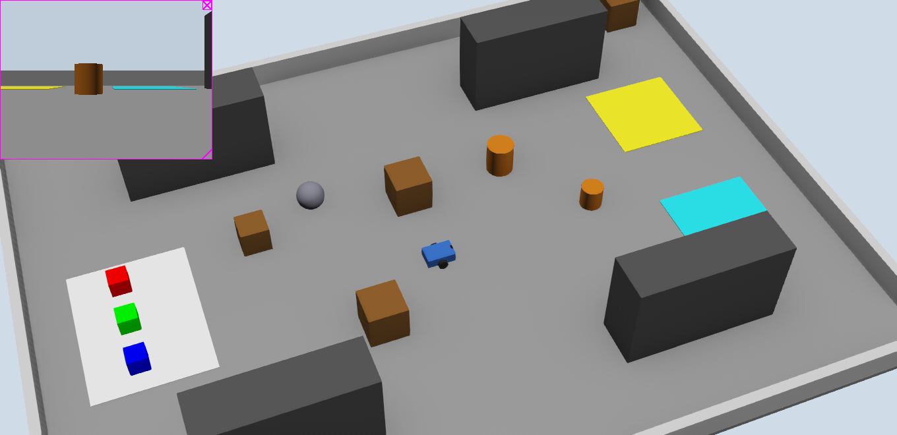
IntelliBot is a differential-drive base (0.30 \times 0.20 \times 0.10 m, 2.8 kg) with two driven wheels (r = 0.05 m, track L = 0.24 m, 20 rad/s limit) and two zero-friction casters. A post at the rear carries the arm. Table II lists its devices.
| Device | Specification | Used for |
|---|---|---|
| LiDAR | 360 rays, 360^\circ, 0.05–4.0 m, 0.14 m high | obstacles, docking, dynamic map |
| Front and rear cameras | 320 \times 240, 1.0 rad planar FOV, 0.12 m high | parcel detection, camera health |
| GPS + IMU | position (x, y) and yaw | EKF corrections |
| Wheel encoders | position sensors on both wheels | odometry (EKF prediction) |
| Front and rear bumpers | touch sensors | collision events and recovery |
| Arm | shoulder, elbow, wrist pitch joints; links 0.28 m and 0.25 m | pick from floor, place on rack |
| Gripper | two fingers, 0.12 m travel each, force pads, palm range sensor, Connector latch | grasp, verify, hold the parcel |
| Display, LED, pen | 320 \times 240 dashboard, state colour, floor trail | live monitoring and evidence |
The controller (intellibot_controller.py) is a Webots supervisor written in Python 3.12 with NumPy [9] and OpenCV [8]. Only it and perception.py touch the Webots API; every algorithm (kinematics, PID, grid, A*, EKF, FSM, detector, docking, arm kinematics) is plain Python, so it can be unit-tested without the simulator. All constants live in config.py. Fig. 2 shows the data flow. The FSM is the only place that decides; perception and the EKF only report, and the governor can always overrule a speed command.
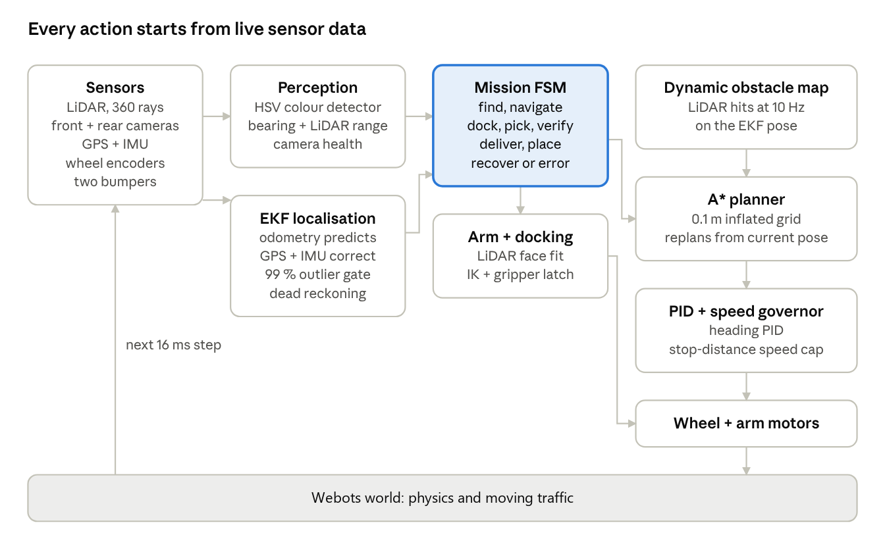
A body command (v, \omega) maps to wheel speeds by inverse kinematics [4]:
and the encoder increments \Delta\phi_L, \Delta\phi_R give the odometry update
The waypoint follower steers with a PID on heading error, with gains k_p = 2.0, k_i = 0.05 and k_d = 0.15 [10], turns in place when the error exceeds 0.6 rad, and slows over the last 0.5 m. It can drive forwards or backwards, whichever needs the smaller turn, because the robot has a camera at each end.
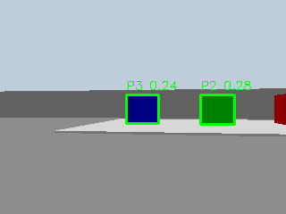
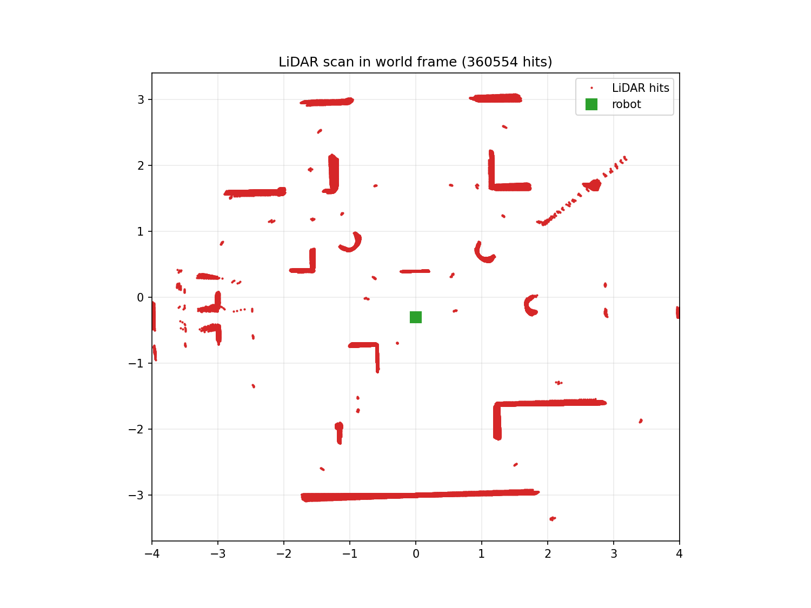
The state is the pose \mathbf{x} = [x, y, \theta]^{\mathsf T}. Odometry drives the prediction [2]:
and GPS and IMU correct it with innovation \boldsymbol{\nu}_k = \mathbf{z}_k - H\hat{\mathbf{x}}_{k|k-1} and gain
Every correction is gated by its normalised innovation squared, \boldsymbol{\nu}_k^{\mathsf T} S_k^{-1} \boldsymbol{\nu}_k < \gamma, with \gamma = 9.21 for GPS and 6.63 for the IMU (\chi^2, 99 %) [7]. A sensor's R is inflated as its health drops. If GPS is silent for 0.5 s the filter dead-reckons on odometry and IMU. If GPS fixes are rejected but agree with each other for 0.5 s, the robot was displaced (for example by a collision), so it relocalises and the planner is told. A matching re-anchor exists for the IMU heading. The navigation pose is the EKF output; ground truth is read only for evaluation.
The static map is a 0.1 m occupancy grid inflated by the robot radius plus a 7 cm margin (0.25 m). A* [3] (8-connected, Euclidean heuristic) finds a path, which is smoothed by line-of-sight shortcuts and resampled every 0.3 m. A dynamic layer marks cells from LiDAR hits at 10 Hz and clears them when rays pass through, so a moved obstacle disappears within four scans. The decision maker replans from the current pose when the next 1.5 m of route is blocked, the robot deviates more than 0.6 m, it is stuck for 5 s, it bumps something or the EKF relocalises. For a moving obstacle it first waits up to 4 s before detouring.
Every command passes a governor that caps speed so the robot can always stop before the nearest obstacle in its corridor:
where v_{\mathrm{clear}} is the largest speed whose stopping distance fits the measured clearance,
Cruise is 0.70 m/s, 0.50 m/s while carrying, 0.12 m/s with degraded LiDAR or localisation, and zero if the LiDAR fails. Acceleration is limited to 1.0 m/s^2 and yaw acceleration to 9 rad/s^2; an emergency stop skips the ramp.
The decision maker is a finite-state machine (Fig. 5): ARM_STOW, FIND_PACKAGE, NAVIGATE, DOCK_PICK, ARM_PICK, VERIFY_ATTACHMENT, PLAN_DELIVERY, DELIVER, DOCK_PLACE, ARM_PLACE, VERIFY_DELIVERY and DONE, with ARM_RECOVER and ERROR for failures. Each state has a timeout and logs its reason on exit. In interactive mode the robot asks for the next task at the console and returns to the centre between missions. Every step ends on a sensor check: the grasp is verified by finger width and force pads, the placement by the palm range-finder. Rack docking and placing retry in the same way.
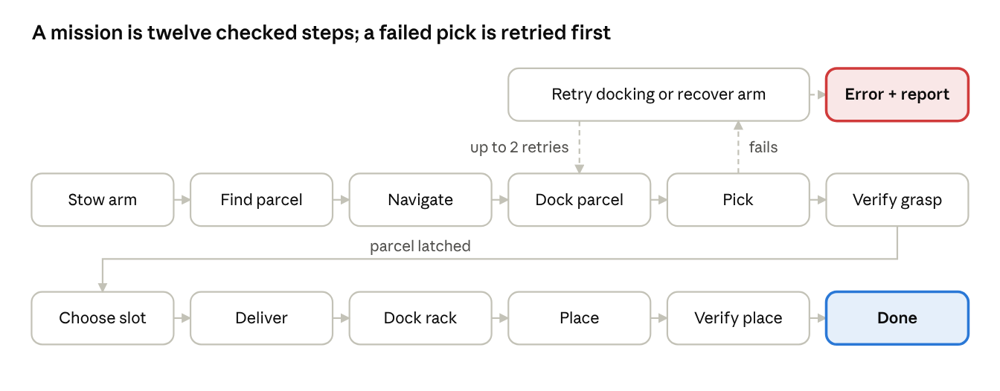
decision_maker.py).Docking fits a line to the parcel's or rack's front face in the LiDAR scan, drives to a pre-dock point 0.20 m back on that line, then creeps in until range, lateral and heading errors are under 8 mm, 15 mm and 1.5^\circ. The arm then follows joint trajectories from planar inverse kinematics [5]: pre-grasp, grasp at floor level, close the fingers, and lock the Connector latch. A grasp is accepted only if the finger width and force pads agree with a 20 cm parcel. At the rack the robot picks a free slot (levels L1 or L2), docks, places, releases and verifies that the parcel stayed in the slot (Fig. 6).
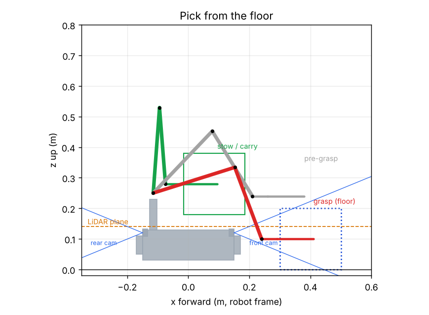
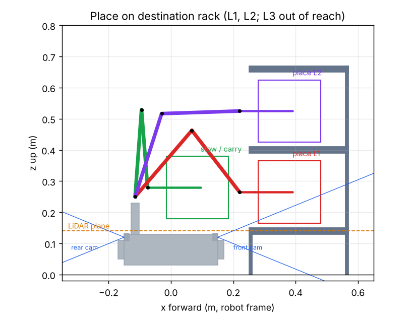
config.py (side view, robot frame): stow/carry pose, pre-grasp and floor grasp (left); placing on rack levels L1 and L2 (right). Level 3 is out of reach. The orange line is the LiDAR plane the arm must stay clear of while stowed.The carts and the decoy robot are moved kinematically by the supervisor, which writes their pose each step. An earlier design forced their velocity on physics bodies, which shoved the robot with unlimited force and sometimes froze them when the physics engine put the body to sleep. Each mover now runs its own small state machine (DRIVE, TURN, YIELD, BACKOFF, HOLD): it stops when IntelliBot is ahead within 0.45 m, backs up 0.45 m if the robot has not passed after 4 s, then carries on. The decoy turns round at each lane end, spins its wheels and flashes its beacon while giving way. IntelliBot is told none of this; it sees an obstacle on its sensors.
The controller package has about 40 modules. 312 pytest tests cover kinematics, PID, grid, A*, EKF, safety, detector, docking, arm kinematics, the FSM, the movers and world generation, and run without Webots in about 90 s. An offline kinematic simulator runs whole missions for ablation studies. In Webots, each run writes run.csv (10 Hz state, poses, ground truth, speed caps), manip.csv (arm and gripper), mission_report.json and a console log. Scenarios (normal runs and ablations) run in batch with tools/run_scenario.py.
The full mission works in Webots: P3 is found, picked, carried and placed on the Zone B rack in 72.9 s, 0.6 cm from the slot centre, with no contacts and 5 mm localisation error. Every number below states whether it comes from Webots or from the offline kinematic simulator.
| Measure | Value |
|---|---|
| Result | DELIVERED, verified by sensors and by ground-truth audit |
| Mission time | 72.9 s simulated |
| Placement error | 0.6 cm from slot centre |
| Bumper contacts | 0 |
| EKF error vs ground truth | 5 mm position RMSE, 0.12^\circ heading RMSE |
| Mean NEES | 0.37 (consistent: below 3 for a 3-state pose) |
| Cruise speed | 0.70 m/s (0.50 m/s carrying) |
An interactive GUI run on the final build (decoy robot on the lane) delivered P1 to Zone A rack slot RA-L1-B1 in 93.6 s, with 17.5 m driven and one PATH_BLOCKED replan. The EKF tracked ground truth with 5.7 mm and 0.17^\circ RMSE (mean NEES 0.49, 1183 samples). There were no bumper contacts and no emergency stops; minimum corridor clearance was 0.07 m. The decoy robot gave way twice; CART_2 gave way twice and backed up both times (Figs. 7 and 8).
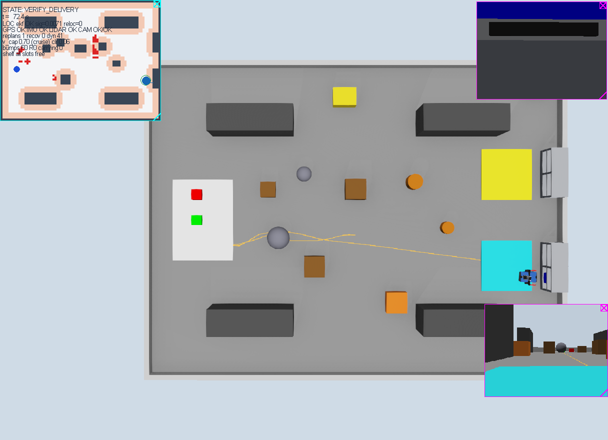
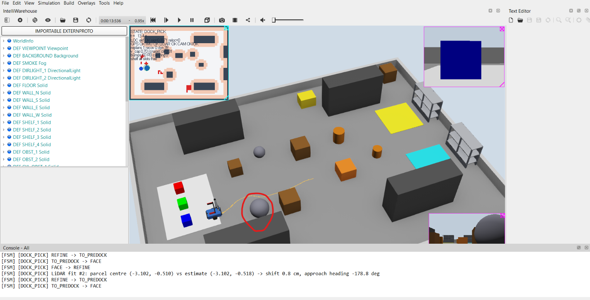
Commanded and measured motion agree within 1 % (Table IV), which validates the wheel model before anything is built on it.
| v_{\mathrm{cmd}} (m/s) | \omega_{\mathrm{cmd}} (rad/s) | v meas. | \omega meas. | Error |
|---|---|---|---|---|
| 0.20 | 0.00 | 0.1982 | 0.0000 | -0.90 % |
| 0.00 | 1.00 | 0.0000 | 0.9906 | -0.94 % |
| 0.20 | 0.50 | 0.1982 | 0.4953 | -0.90 %, -0.94 % |
| -0.10 | 0.00 | -0.0991 | 0.0000 | +0.90 % |
Pure odometry drifts 0.8–2.2 cm over 1–2 m and up to 4.7^\circ after a square path. That is small per metre but unbounded over a mission, which is why odometry only drives the EKF's prediction.
On an early full mission run, the robot followed the A* reference with a mean cross-track error of 0.4 cm and a maximum of 6.2 cm (723 samples, 69 s). The largest errors occur at the turn into the pickup area, where the follower turns in place (Fig. 9).
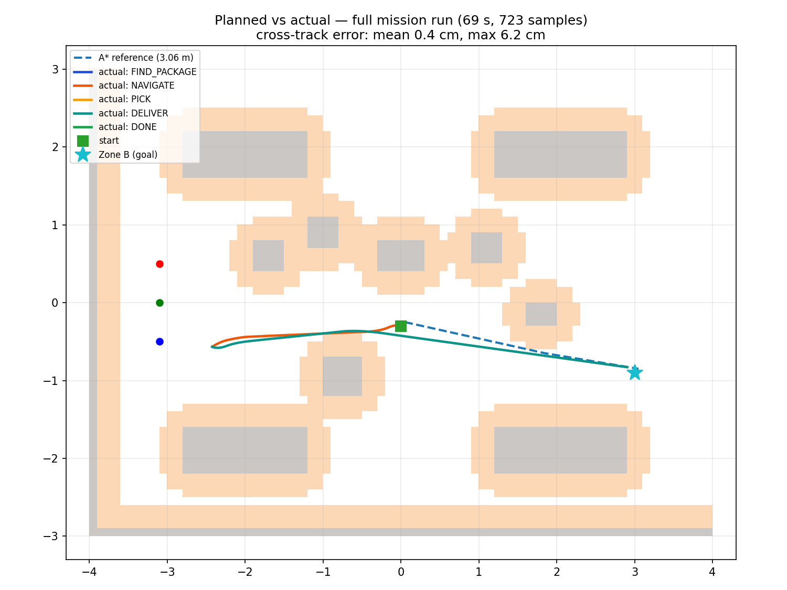
The offline ablation (Fig. 10) compares three navigation poses on the same mission. Odometry alone drifts to 22 cm RMSE. Raw GPS is noisy and failed the mission at docking (it needs centimetre accuracy). The EKF stays at 1.1 cm and only reaches 1.7 cm through a 10 s GPS outage, because odometry and IMU carry it through. When the robot is displaced mid-route, relocalisation cuts the error from 15.9 cm to 5.2 cm RMSE and the mission time from 93.6 s to 73.4 s.
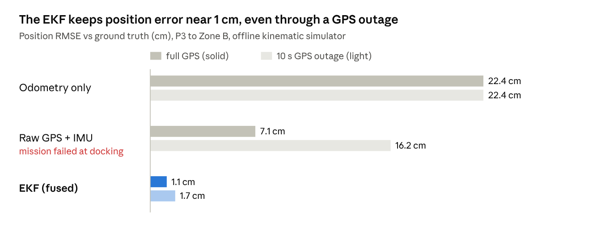
tools/run_experiments.py).Offline, the governor made missions 3–4 % faster than a fixed 0.30 m/s (72.8 s vs 76.2 s for P3 to B) while keeping the same clearance and zero contacts. With a box appearing on the route, continuous replanning detoured early (PATH_BLOCKED) and finished in 73.5 s with 0.20 m clearance; the legacy safety-stop approach got within 0.10 m and took 82.2 s. A cart crossing at 0.4 m/s still caused contacts in both variants in that model, which is what led to the give-way behaviour of the movers in Webots.
Testing exposed real bugs; each was traced to a root cause before it was fixed (Table V).
| Symptom | Root cause | Fix |
|---|---|---|
| Webots aborted with 0x40000015 after a few minutes; NumPy MemoryError | Webots R2025a leaks memory on every Display.setFont() call; the dashboard called it 3 times per refresh, so Webots grew \sim60–80 MB/s to \sim10 GB | set the font once and paste the static map as one image; memory now plateaus at 600–735 MB |
| 27 rear-bumper hits, -0.17 m clearance, 21^\circ heading RMSE in one run | a velocity-forced 0.75 m/s sphere rammed the waiting robot and a crate on every pass | slower lane clear of the crate, kinematic movers that give way, decoy robot |
| Moving obstacle froze mid-aisle; robot deadlocked behind it | the physics engine put the commanded body to sleep | kinematic movers (pose written every step) |
| DOCK_PICK failed: parcel face not found by LiDAR | the arm post blinds \pm6^\circ behind the LiDAR; parcel range fell back to a bounding box 0.3 m short | turn the parcel out of the rear blind sector before trusting range |
| Robot froze silently | stuck detection used the governed command, which was 0 while held | stuck check uses the pre-governor command |
| Camera health flapped to FROZEN | identical frames while standing still counted as frozen | count only while the base moves |
One more bug surfaced in the GUI run above. When the operator asked for P1 a second time, after it was already on the rack, the camera saw P1 on the rack. That estimate was more than 1.5 m from the pickup position, so the sanity check snapped it back to the empty pickup spot, and docking failed with PARCEL_FACE_NOT_FOUND_BY_LIDAR, ending the session in ERROR. The robot now checks its own rack record first and rejects the task (“P1 is already on rack slot RA-L1-B1”), returning to the task prompt.
The EKF is the component that made everything else possible: docking needs centimetre poses, and only the fused estimate delivered them, even through a simulated GPS outage. Making the speed limit a function of clearance let us raise cruise speed from 0.30 to 0.70 m/s without losing margin. The biggest lessons came from the simulator itself: two of the worst failures (the memory leak and the frozen obstacle) were Webots behaviours, not algorithm bugs, and were only found because every run wrote logs we could read afterwards. Results are still limited: the Webots numbers come from a few runs per configuration, the 10-run campaign predates the arm, and the Webots GPS is noise-free, which flatters localisation.
IntelliBot meets the project's objectives in simulation: it finds, picks, carries and places a parcel autonomously, through moving traffic, with centimetre-level accuracy and no contacts.
The main limits are honest ones: few Webots runs per configuration, a noise-free simulated GPS, and a single robot.